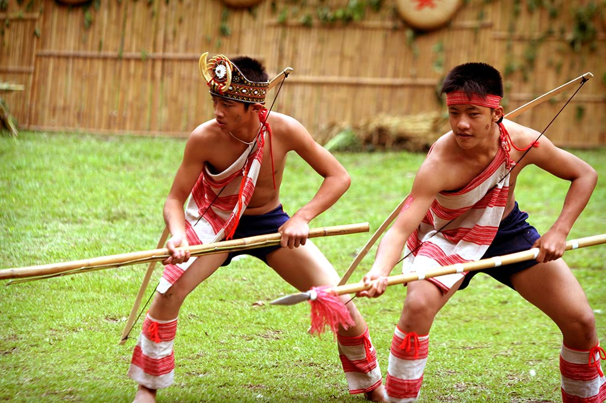
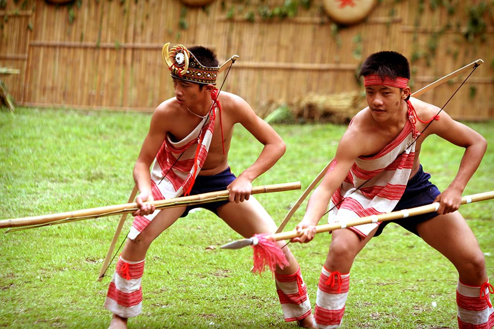

族群介紹
太魯閣族主要分布於花蓮秀林鄉、萬榮鄉及中央山脈一帶， 以山林狩獵、農耕與織布文化聞名。太魯閣族核心精神為 「Gaya」——族人共同遵循的生活規範。
太魯閣族語屬南島語系，與賽德克族文化相近，傳統服飾以深色為主， 代表穩重與勇士精神。
地理位置
太魯閣族主要分布在花蓮縣秀林鄉、太魯閣峽谷與立霧溪流域附近。
景點特色
| 地點 | 地區 | 特色說明 |
|---|---|---|
| 太魯閣國家公園 | 花蓮縣 | 壯麗峽谷地形與傳統領域，是族人文化核心象徵。 |
| 秀林鄉部落 | 花蓮秀林 | 保留語言、織布、祭儀與勇士文化的重要部落區域。 |
| 立霧溪 | 花蓮縣 | 族人採集、狩獵與遷移的重要河域地景。 |
飲食文化
| 食物 | 主要材料 | 說明 |
|---|---|---|
| 小米飯 | 小米 | 為祭典與日常重要主食，象徵祖靈庇佑。 |
| 鹹豬肉 | 豬肉、鹽 | 煙燻保存的傳統肉類，是部落慶典常見料理。 |
| 野菜山產料理 | 山蘇、野菜 | 展現族人採集文化與山林生活知識。 |
照片與影片介紹
部落照片
 

以上為太魯閣族的衣著特色。
影片介紹
以上為太魯閣族的文化介紹影片。